Karen / PowerPoint & courses
PowerPoint, designed by hand.
Courses, pitch decks, company profiles and templates. One idea per slide.
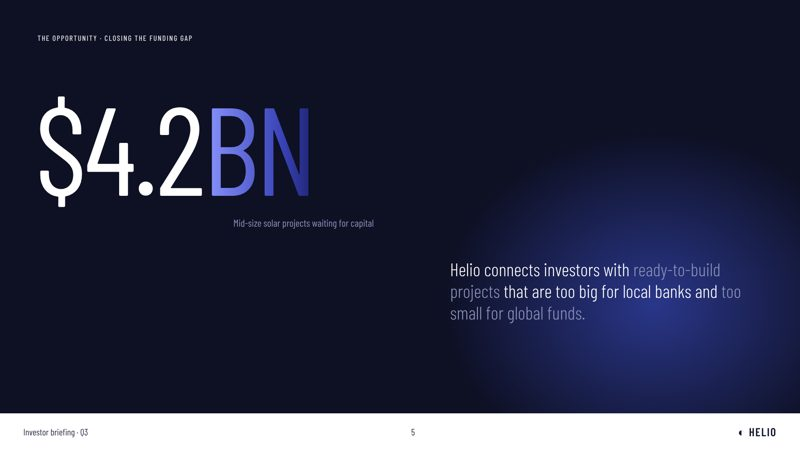
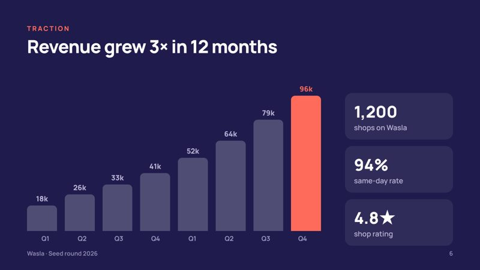
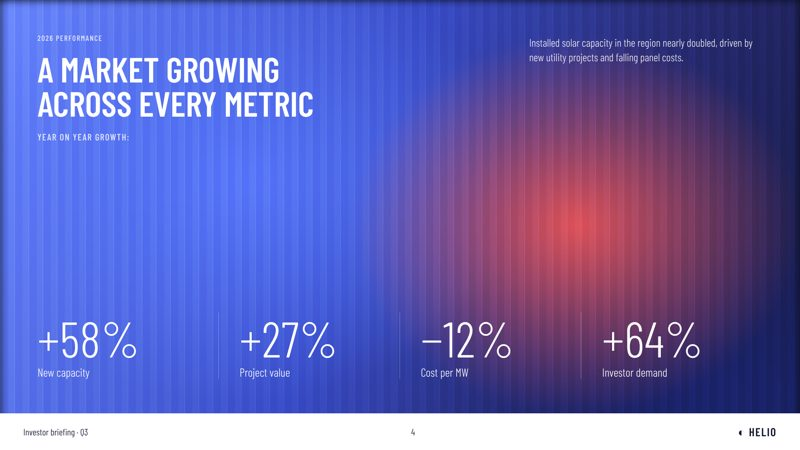
Choose a service
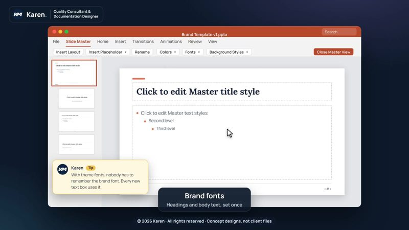
Master Slide templateYour brand built into PowerPoint, so your team only types and the design never breaks.
A clear story investors follow: problem, market, traction, then the ask.
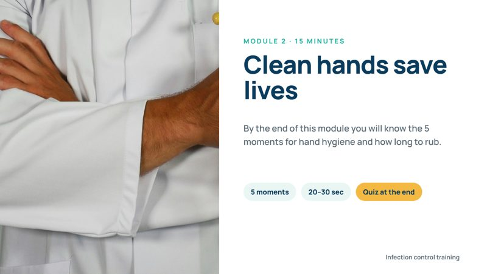
Lecture or courseAny field: medical, HR, cybersecurity, sales or school. Slides that teach, step by step.
For pitching to a company or an audience: what it is, why it matters, and what you ask for.
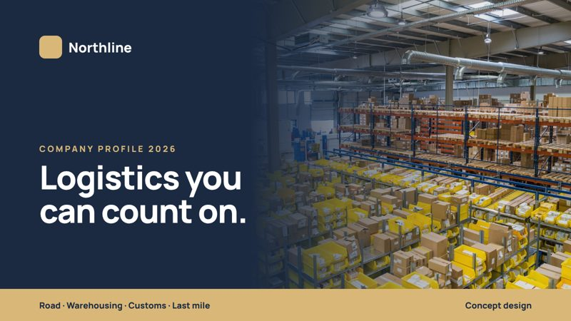
Company profileA profile that proves what you do, with real numbers and one clean layout for every service.
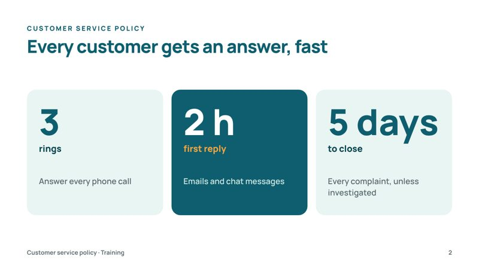
PDF or Word to PowerPointYour document turned into slides people listen to: one idea per slide, text into visuals.
 Formatting your deck
Formatting your deckYour slides, your words, made consistent: same fonts, same colours, same grid.
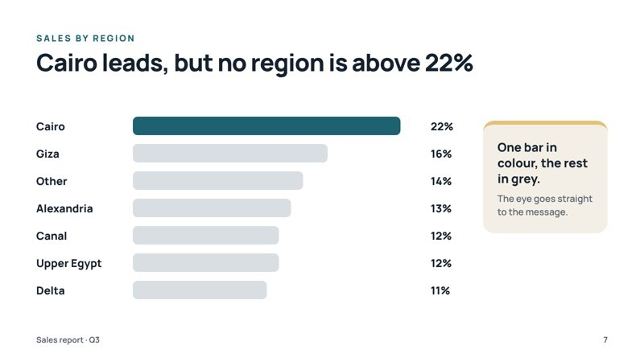
Chart or infographic slideData people understand in one look: the right chart, one highlight, a clear title.
Fixed price. No extra fees.
Concept work
Original samples I designed to show my style. Client files always stay private.

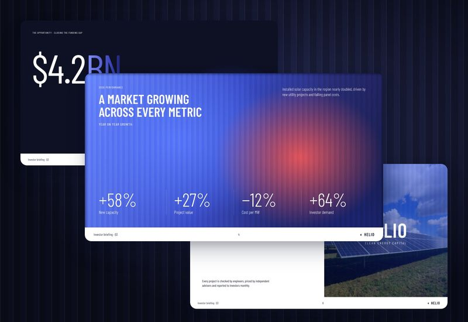

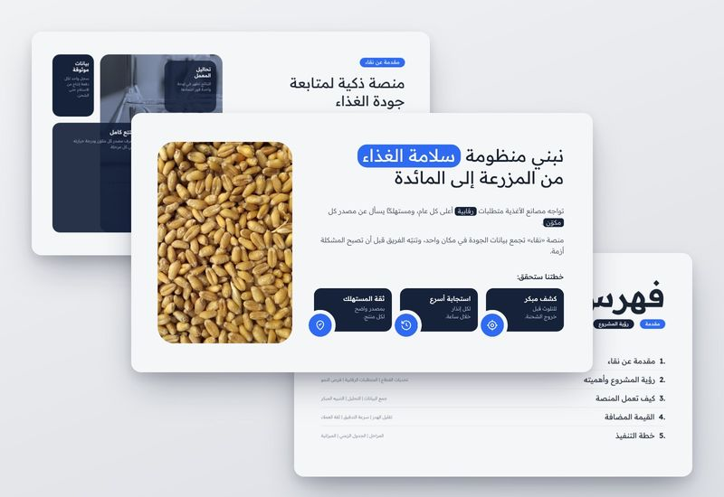

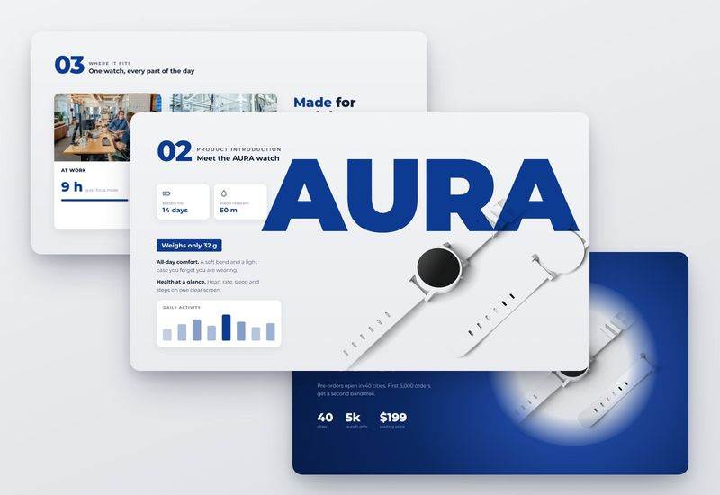

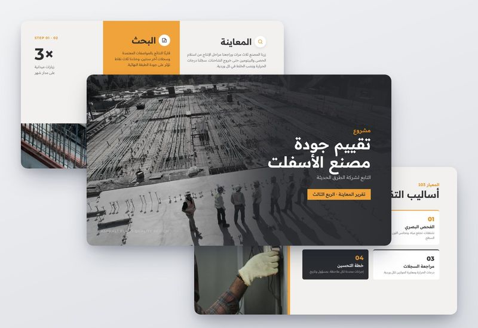
Deck check
Drop a PowerPoint file. I’ll show what could break, what is hard to read, and how I’d fix it.
This looks inside your file. It does not compare your text with the internet.
How it works
By email, WhatsApp, Fiverr or Freelancer.
I reply myself in 15–30 minutes.
Watermarked preview, unlimited changes, then your clean files.
Send me your file.
You get a fixed price and a delivery time first.
Online nowI reply myself in 15–30 minutes